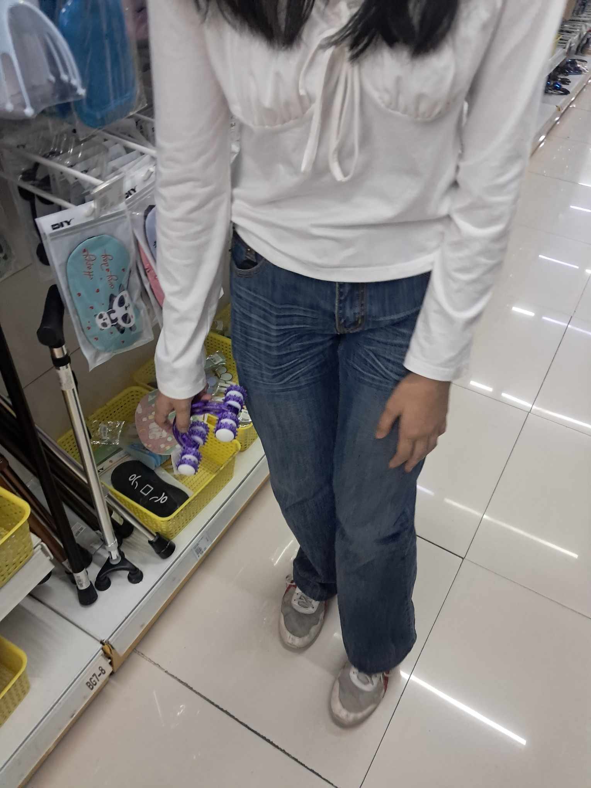

i didn't put this in a paper mainly cause of your family, i'm terrified of them and i didn't want them seeing this. it also felt right doing this considering that i'll be writing this with my hands from the last few months, basically saying that this technically took 3 months writing.
where do i start? happy birthday, you child. it's still kinda surprising that you're 18 and you still look younger than me. literally, you can ask some stranger and ask who's younger and they'll answer that it's you. compare the months i've known you versus the years your friends have known you, of course i lose at that battle, but i don't care whether or not i've only known you for months. YOU HAVE CHANGED ME and i'm super super glad i've met you. the fact that you endure all the shit i throw at you when i'm mad, my really nsfw side, and just the overall bitchy me tells that you were, and still is, a strong person. you might say "awww, but i'm not strong" shut up, you are. you're strong in my eyes, and i know your friends, and family will agree. i've no clue about going beyond 18, obviously, but knowing you, i know you'll persevere throughout the adventure. you're an awesome, kind, caring, and overall a good person, and i'm very much glad you are.
don't even get me started on the talent. hell, you are blessed with almost everything. dancing (talking about the tiktoks, THOSE tiktoks.), singing, instruments, writing, whatever, i'm jealous. you are blessed with so much talent and the fact that you don't stop grinding, and grinding, and grinding at music to be "more talented" even though you've already been blessed by it, is just super awesome. you might not see it, but i see a very, VERY, VERY awesome musician who has the talent to take over half of, if not, the whole world. you are cool and i love it.
i got you the massage rolling thing (yes i don't know what the hell it's called cause) is cause when we were on a date, and we went to mr. diy (yes, weird ahh date) and you saw that rolling thing, you loved it so much you didn't wanna leave it alone. here's proof:
so i went to the same mr. diy but they didn't have it anymore, so i had to go to 35 different mr. diy an– i'm kidding, i went online and tried finding the same roller. it did take me a bit of time (almost a day) to pinpoint and find the exact same thing but i'm glad i wasted a day for it cause it'll give you comfort and i can probably make you comfy just by rolling it at your back or something.
again, you're a great, good, cool, hot person (don't), and i'm VERY, VERY, DE VERY (see what i did there? de vera and ver– no? ok) glad to call you my baby, my langga, my mahal, and my lover. more names will come like "honey" or whatever but you get it. happy birthday, mahal.